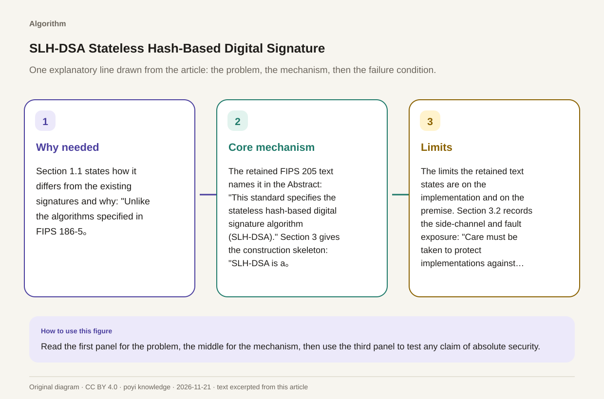
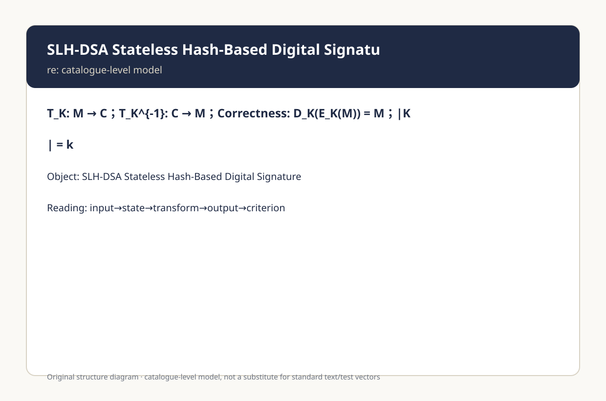

Principles
Algorithm: SLH-DSA (SPHINCS+) stateless hash-based signature algorithm (SLH-DSA 状态哈希签名). The retained FIPS 205 text names it in the Abstract: "This standard specifies the stateless hash-based digital signature algorithm (SLH-DSA)." Section 3 gives the construction skeleton: "SLH-DSA is a stateless hash-based signature scheme that is constructed using other hash-based signature schemes as components:" and lists the two kinds — "a few-time signature scheme, forest of random subsets (FORS), and (2) a multi-time signature scheme, the eXtended Merkle Signature Scheme (XMSS)." The principle is that SLH-DSA composes a few-time FORS scheme and a multi-time XMSS scheme (itself built on the one-time WOTS+) into a stateless, hash-based digital signature. This dossier rests on the algorithm's own description inside the standard text and is kept distinct from the fips205 standard record, which documents the publication.

Why it matters
Section 1.1 states how it differs from the existing signatures and why: "Unlike the algorithms specified in FIPS 186-5 [1], SLH-DSA is designed to provide resistance against attacks from a large-scale quantum computer." unlike the classical signature standard, it is designed for quantum resistance. The same paragraph gives the security premise: "The security of the stateless hash-based digital signature algorithm (SLH-DSA) relies on the presumed difficulty of finding preimages for hash functions" its safety rests on hash-preimage hardness. The abstract adds the origin: "SLH-DSA is based on SPHINCS+, which was selected for standardization as part of the NIST Post-Quantum Cryptography Standardization process." The chain of reasons is therefore that classical signatures fail under quantum computing, while a stateless scheme grounded in hash-preimage hardness and standardized from SPHINCS+ can provide quantum resistance. The wording is presumed difficulty, not a proof.
Applications
The usage constraints sit in the numbered sections at distinct wording levels. Section 3.2 puts component exposure at should not: "As WOTS+, XMSS, FORS, and hypertree signature schemes are not approved for use as stand-alone signature schemes, cryptographic modules should not make interfaces to these components available to applications." the components serve only to build SLH-DSA, so modules should not expose them as application interfaces. Section 3.1 puts arithmetic at shall not: "Implementations of SLH-DSA shall not use floating-point arithmetic, as rounding errors in floating point operations may lead to incorrect results in some cases." implementations must avoid floating-point because rounding errors can give wrong results. So SLH-DSA is used as a whole signature scheme, its components not surfaced as stand-alone interfaces (should not), and its arithmetic kept off floating point (shall not). should not and shall not are not interchangeable here.

Limits & attacks
The limits the retained text states are on the implementation and on the premise. Section 3.2 records the side-channel and fault exposure: "Care must be taken to protect implementations against attacks, such as side-channel attacks or fault attacks [17, 18, 19, 20, 21]." private-key secrecy is critical, so implementations must guard against side-channel and fault extraction. The premise-side limit is in the why claim: security rests on the presumed difficulty of hash-preimage finding, not on a proof reducible to a broadly accepted hard problem. The acknowledged fragility therefore comes from the implementation (side channels and faults) and the assumption (hash resistance), not from any break of SLH-DSA itself recorded in the standard. The shall-not floating-point limit in §3.1 (see the used claim) is of the same kind — it constrains correctness, not an attack outcome; the text is recorded as printed and no already broken assertion is made.
History
Section 1.2 gives the relation to its candidate lineage. The selection is recorded: "After three rounds of evaluation and analysis, NIST selected the first four algorithms for standardization." and the tie to the round-three submission: "This standard contains several minor modifications compared to Version 3 [4], which was submitted at the beginning of round three of the NIST PQC Standardization process." with the renaming stated: "Throughout this standard, SPHINCS+ will be referred to as SLH-DSA for stateless hash-based digital signature algorithm." The title block prints Stateless Hash-Based Digital Signature Standard and Published: August 13, 2024 Effective: August 13, 2024. So the algorithm this dossier describes is the finalized standard form of SPHINCS+, named SLH-DSA, and it is kept separate from the fips205 record that documents the publication; neither is registered as an alias of the other.
Worked example & verification
Formal model and reproduction steps
[s=k^{-1}\big(H(m)+r d\big)\bmod n]
SLH-DSA (SPHINCS+) stateless hash-based signature algorithm: the registered public parameters, key material or randomness, and message are mapped through the stated transformation to an output checked against the registered criterion. The worked example is a structural reproduction, not a new test vector; parameter ranges, standard versions and implementation details remain source-bound.
References
- Wikipedia search entry for SLH-DSA 状态哈希签名. https://zh.wikipedia.org/w/index.php?search=SLH-DSA%20%E7%8A%B6%E6%80%81%E5%93%88%E5%B8%8C%E7%AD%BE%E5%90%8D
- Handbook of Applied Cryptography (Menezes, van Oorschot, Vanstone). https://www.cacr.math.uwaterloo.ca/hac/